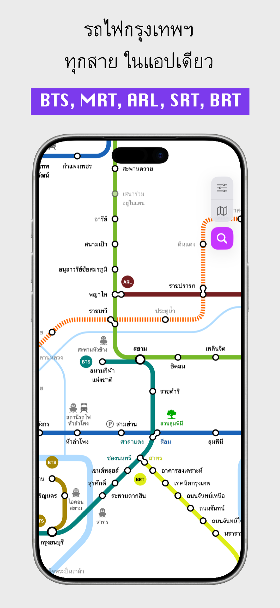
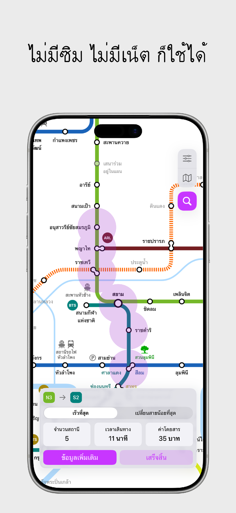
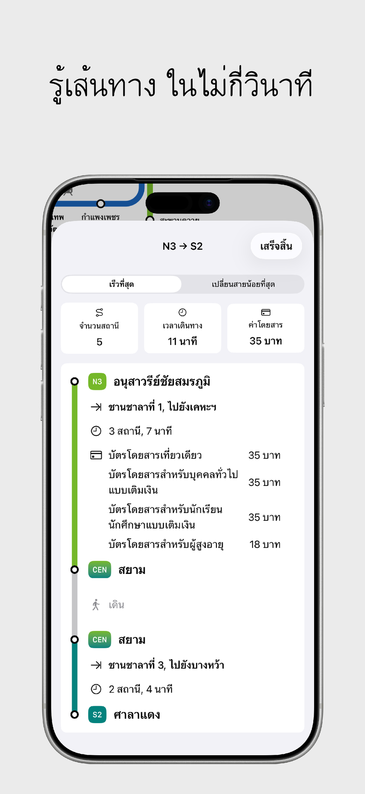
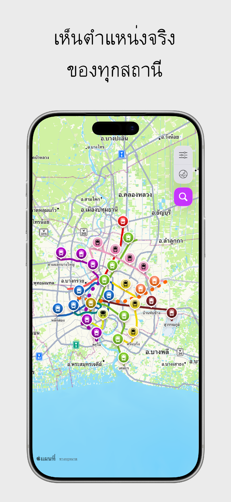

ออฟไลน์ 100%
ไม่ต้องใช้ซิม อินเทอร์เน็ต หรือ Wi-Fi สามารถค้นหาเส้นทาง ตารางเวลา และดูแผนที่ได้ทุกที่แม้ไม่มีสัญญาณ
คู่มือแผนที่รถไฟฟ้าออฟไลน์





คู่มือการเดินทางด้วยรถไฟฟ้าที่ครบถ้วนที่สุดในกรุงเทพฯ ครอบคลุม BTS สุขุมวิท/สีลม/สายสีทอง, MRT สายสีน้ำเงิน/ม่วง/เหลือง/ชมพู, แอร์พอร์ต เรล ลิงก์, และรถไฟฟ้าชานเมืองสายสีแดง

คู่มือรถไฟฟ้ากัวลาลัมเปอร์และหุบเขาคลัง ครอบคลุม Rapid KL LRT Kelana Jaya/Ampang/Sri Petaling, MRT Kajang/Putrajaya, KL Monorail, KTM Komuter และ KLIA Express
ไม่ต้องใช้ซิม อินเทอร์เน็ต หรือ Wi-Fi สามารถค้นหาเส้นทาง ตารางเวลา และดูแผนที่ได้ทุกที่แม้ไม่มีสัญญาณ
คำนวณเส้นทางที่เร็วที่สุด จุดเปลี่ยนขบวน ค่าโดยสารที่ถูกต้อง และเวลาเดินทางโดยประมาณได้ในพริบตา
สลับระหว่างแผนที่ผังเส้นทางที่อ่านง่าย และแผนที่ซ้อนทับตำแหน่งจริงตามภูมิศาสตร์ได้อย่างลื่นไหล
ข้อมูลตารางเวลาเดินรถทุกสถานี ไม่พลาดรถไฟขบวนสุดท้ายของวัน
ระบุหมายเลขทางออกที่ถูกต้อง พร้อมแผนที่บริเวณรอบสถานี ห้างสรรพสินค้า โรงแรม และสถานที่สำคัญ
ค้นหาสถานีได้อย่างรวดเร็วทั้งภาษาไทย อังกฤษ จีน ญี่ปุ่น เกาหลี และมาเลย์
แอป City Metro ไม่เก็บ บันทึก หรือส่งต่อข้อมูลส่วนตัวหรือประวัติการเดินทางของคุณ การคำนวณทั้งหมดทำงานบนอุปกรณ์ของคุณ 100%
ได้ City Metro ออกแบบมาสำหรับการใช้งานออฟไลน์ 100% การค้นหาเส้นทาง แผนที่ ตารางเวลา และข้อมูลทางออกสถานีสามารถใช้งานได้โดยไม่ต้องมีสัญญาณอินเทอร์เน็ตหรือซิมการ์ด
City Metro รองรับทุกสายในกรุงเทพฯ (BTS สุขุมวิท/สีลม/สายสีทอง, MRT สายสีน้ำเงิน/ม่วง/เหลือง/ชมพู, Airport Rail Link, SRT สายสีแดง, BRT) และกัวลาลัมเปอร์ (Rapid KL LRT, MRT, Monorail, KTM Komuter, ERL, BRT)
ใช่ แอป City Metro ดาวน์โหลดและใช้งานได้ฟรีบน Apple App Store
ไม่มี City Metro ไม่เก็บ บันทึก หรือแชร์ข้อมูลส่วนบุคคล ประวัติตำแหน่ง หรือการค้นหาเส้นทางของคุณ การประมวลผลทั้งหมดเกิดขึ้นบนอุปกรณ์ของคุณเท่านั้น
พร้อมใช้งานบน App Store สำหรับ iPhone และ iPad